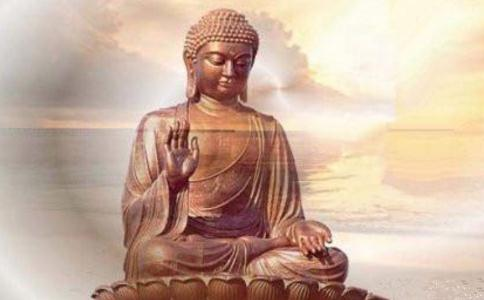

“生命里所出现的事情中，哪件最让您感到惊奇？”古今贤哲回答：“这件事就是，人虽看到身边的人一个个去世，却从没想到自己也会死去。”
虚云大师由于病重而越来越虚弱，有人敦促他看医生，他却拒绝：“我与这
师父在辞世之前一段时间曾恳求弟子要保持
1419年，62岁的宗喀巴在哲蚌寺讲道时，在场的人看到晴朗的天空出现了数道彩虹，他们认为这标识他就要死了。讲道进行一半时，宗喀巴果不其然地停了下来，说他要暂停一下。这种情况十分不寻常，因此众人再次有种感觉，认为这表示他在为自己将辞世做准备。如果上师要离开某处前没有完成讲道，会被认为是个吉兆。因为这确保师父与弟子在此生及来世会再次相见，以接续该次讲道。他于是前往拉隆大寺作祈祷与供养，在离寺前还
第二天，他承认自己觉得痛，虽然从外表上，别人并无法马上清楚看出这点。他把帽子和袍子交给一位弟子，并对在场的人提出忠告，强调不要转移利他心的重要性。
在第10个月的第20天，宗喀巴对黑鲁嘎本尊做了盛大的供养，并在当晚进行金刚持诵。第25天还很早时，他以双腿盘坐的姿势禅修空性。到日出时，则做了许多内供养，但在场的人都不明白他为什么这么做。接着，他的呼吸便停止了，身体则恢复16岁时的活力。许多在场的弟子都看到他的身体放射出多彩的光束，这证实了许多人的信念：宗喀巴进入证悟者的道。
为了知道如何妥善处理他的躯体，大家便询问传神谕的人。他们预言，该肉身应被供奉在佛塔中，于是便建造了一处专用厅堂，内置银色平台，其上安有一座黄金佛塔。本世纪中叶时，宗喀巴的肉身已如木乃伊一般，但保存完好仍让人惊讶。第九世嘎玛巴赞颂他是个“以正确完善的见地扫除错误之见”的人。
临济禅师 临济常被称为“中国的苏格拉底”。他向师父黄蘖告别后，便出行游方去了。直到公元八五零年后，才在一小寺落脚。在那里，他大约进行了十年的教学，然后便退休。到了公元八六六年将死之时，他坐好后并说：“吾灭后，不得灭却吾正
在临死前，中国
靠近点。到八月，我便要离世了。你们任何人有疑问的，尽快提出，我会为你们解答。我要解决你们的
所有弟子都因深受感动而哭泣。他们当中只有神会不为所动，惠能面向他，说了些话：
神会，你还年轻，但你已证悟，好与不好并无二致，也不为毁誉所动。你们其他的人则尚未了解……你们哭，只是因为不知道我将去的地方。你们若知道我的去处，便不会哭了。大自然本身即无生无死，无去无来。
再会，各位。现在我要离开了。我走了以后，不要如世俗那般痛哭流涕，不要接受致哀、奠仪、丝绸，也不要披麻戴孝。你们谁要如此做了，便不合于圣法，也就不是我的弟子。大家要像我还在这里一样，一起坐禅。只要你们可以平静安详、无动无止、无生无死、无来无去、无是无非、无住无往，那么，就是大道。我走了以后，你们要修行
僧灿禅师在去世前做了准备，剃头、沐浴，然后敲响寺钟集合僧众，宣布自己要走的消息。
然后，他问道：“各位师兄，你们知道无声的‘三摩地’吗？”
在场的人都回答：“不知道”
禅师便说：“安静地倾听，不要有任何杂念。”
僧众于是不出一声，期待听到有关无声三摩地的教诲，僧灿禅师便在同一时间离开了人世。